README.md · 01-docprune-random.md · 02-one-question-depth.md · 03-pilot48.md · 04-next-questions.md
# Presentation evidence packet: frozen-Qwen document selection Prepared 2026-09-06 on SOL. This curated copy is tracked in Git and works after cloning. This is source material for a presentation writer, not a slide deck. It gathers useful completed experiments and their implications, with optional detail for speaker notes. No model run, training, retrieval or mask sweep was launched for this packet. ## Suggested central story **We are testing whether document context can be selected using measured effects on a frozen answerer, and whether a deployable selector can learn those effects.** Attention pruning is the starting comparator; answer-conditioned regional attribution is a diagnostic of possible improvement; learned selection is the next research question. Evidence verification determines whether improved scores mean true answer correction. | Story beat | Evidence to use | Defensible interpretation | |---|---|---| | 1. Test the original heuristic | Controlled native-budget DocPrune-versus-random results; larger preliminary follow-up | Attention ranking's advantage must be measured at the same token budget and boundary; keep small-study uncertainty and larger-study status visible | | 2. Locate what needs improvement | All-kept/BTP/QTP/CTP stage comparison | In this local reconstruction, decoder pruning is a promising stage to improve; this is not a claim about unpublished author code | | 3. Measure region effects directly | One-question ContextCite-style masks and held-out LDS/RMSE | A simple surrogate can predict answer-conditioned mask responses on this question; selection is no longer based only on attention scores | | 4. Ask what target and depth matter | Own-boundary B_input/B13 fits for accepted gold and generated response | Gold-conditioned and self-conditioned objectives differ; early/late results must be compared within the same target and mask setup | | 5. Test beyond one question | 48-question development pilot, native matched budgets | Gold support improves saved wrong-stratum F1 and preserves scored-correct answers; this is development evidence of useful intervention effects | | 6. Inspect what the gains mean | Real table correction alongside missing evidence, stale gold and a hidden semantic loss | Score changes are not automatically grounded correction; this motivates stronger targets and evidence checks | | 7. Make effects predictable and deployable | Planned shared probes, own-boundary selector alternatives | Test whether useful information is learnable from available inputs, and what computation/depth it needs; no architecture winner yet | The chronology matters, but do not imply that every later design decision was prespecified by the earliest experiment. The visual audit and corpus corrections are later interpretation of earlier measurements. ## Read in this order 1. [DocPrune versus random and stage localization](01-docprune-random.md). 2. [One-question depth, target and LDS diagnostics](02-one-question-depth.md). 3. [48-question pilot, mask-count experiment and visual audit](03-pilot48.md). 4. [Next questions, corpus correction and architecture context](04-next-questions.md). Each experiment chapter has a corresponding JSON evidence record. The packet also includes an [asset manifest](asset-manifest.json), copied case assets under `assets/`, and source snapshots/provenance in the source manifest. The archived source paths and runtime revisions are evidence provenance; the repository HEAD at packet creation is not automatically the revision that ran an experiment. ## Priority for the main presentation **Core:** matched-random comparison, the two-by-two accepted/self × early/late one-question table, wrong/correct-stratum pilot table, one verified table-correction example, and the resulting next research question. **Useful context:** stage localization; surrogate fidelity and set stability; comparison against unpruned as well as DocPrune; a single scoring/evidence caveat example; no test-time gold requirement in the intended learned selector. **Appendix/speaker notes:** reconstruction alternatives, preliminary larger-random analysis status, exact-sequence target definitions, 192-mask failure concentration, cohort overlap and split discrepancies, full case token footprints, and corpus collection provenance. These should remain available without overwhelming the story. ## Numerical and terminology rules - Tables in the early work often report **F1 points on 0–100**, while the pilot reports **F1 fractions on 0–1**. For example, 0.38125 equals 38.125 points. A +0.121875 fraction is +12.1875 points, not +0.121875 points. - **Native DocPrune**, **post-BTP/QTP without CTP**, and **all visual tokens kept** are different references. Always label the one used. - **LDS** measures agreement between a surrogate and held-out intervention scores; it is not QA accuracy, proof of grounding, or proof that a retained set is sufficient. - The diagnostic is **adapted answer-conditioned regional ContextCite**, with physically deleted tokens at a decoder boundary. It is not vanilla ContextCite, a token-level oracle, or an already deployable selector. - **B_input** is before the first decoder block. **B_0** is after zero-based block0. The one-question B13 and 48-pilot dynamic B14/B16 results are different designs. - **Exact rescue**, unless explicitly adjudicated otherwise, means an exact match under the historical scorer. Use “document-supported correction” only when the retrieved evidence and answer have been checked. - Mask repeats, questions and documents are different units. Confidence intervals and comparative claims must retain the original resampling unit and cohort status. ## Claims to avoid - “DocPrune is no better than random.” The small study is unresolved; the larger preliminary result must also be reported with its status. - “High LDS proves an early selector works.” It establishes score predictability on the measured mask distribution for a particular question/target, not deployment. - “All four exact rescues are grounded corrections,” or “no harms occurred.” Those describe historical scorer outputs, not the later visual audit's semantic findings. - “192 masks loses four different corrected questions.” The four repeat losses concern one question, later flagged for missing evidence. - “The corpus has 30 incorrect questions,” or “only3of30incorrect questions are valid.” The inspected collection omitted an incorrect-baseline filter and was mixed. - “We have independently evaluated the 48, 100 and 600 collections.” Available manifests have overlap discrepancies; confirmation outcomes are not part of this packet. - “Attached/compact/~2B/hybrid selectors have been compared.” They remain proposed alternatives; the shared-probe plan and own-boundary comparison are distinct studies. ## Visual material - **Q29:** table evidence plus native/support token footprints: a real correction. - **Q26:** correct portrait and deleted-token illustration: a scored tie can hide harm. - **Q37:** supplied-page overview beside separately located source poster: label the latter **not supplied to the answerer**. - **Q41/Q43:** appendix details for complete-set scoring and stale-gold problems. Overlay images illustrate which token locations survived deletion. They are not literal edited images supplied to the cached decoder. Read each asset's caption and case JSON; some details were inspected only after outcomes were revealed. ## Git transfer This directory includes the selected images and source snapshots. Open README.md on GitHub or index.html locally. Absolute SOL paths inside provenance records identify original artifacts; they are not required to read this packet. Full experiment folders and the larger raw result banks remain on SOL.
# Evidence chapter 1: Why move beyond attention ranking? Prepared 2026-09-06. This is presentation source material, not a new experiment or a claim about the unpublished official implementation. All F1 and EM in this chapter use **0–100**, unlike the 48-question pilot’s commonly quoted 0–1 scale. Exact saved extracts, file SHA-256 hashes, and absolute source paths are in [01-docprune-random.json](01-docprune-random.json). ## Main story The local reproduction made the selection problem concrete: aggressive token deletion was feasible, but the final attention-based selection step did not reliably improve answer quality. Once boundary and token budget were controlled, attention ranking was close to random on the small development study. That justified asking a different question: **does an answer-conditioned intervention oracle identify useful selections that these attention scores miss?** It did not establish that random and DocPrune are equivalent, that attention carries no information, or that a deployable learned selector would necessarily succeed. ## 1. Initial reproduction and stage localization Saved full top-4 comparison (`full_top4` source): 2,441 questions, all-kept F1 **37.791069** versus full local DocPrune **36.760344**. Overall paired delta **−1.030725**, 95% interval **[−2.118804, 0.060631]**. Only **2,126/2,441** had exactly identical ordered retrieved pages; within that subset the delta was **−1.198024**, interval **[−2.347131, −0.063970]**. The subset supports the concern independently of observed page-identity drift, but is not a replacement randomized experiment. Timing was explicitly excluded from this analysis because shard hardware differed. The controlled 245-question single-hop diagnostic (`stage245`) fixed retrieval across stages: | Stage | F1 | Original visual tokens retained, pooled-token ratio | Incremental F1 delta and paired 95% interval | |---|---:|---:|---| | All-kept | 44.861224 | 100% | Reference | | BTP only | 43.114286 | 52.830819% | −1.746939 [−4.681633, 1.073469] | | BTP + QTP | 43.632653 | 45.431354% | +0.518367 [−2.138776, 3.232653] | | BTP + QTP + literal CTP | 41.334694 | 18.798335% | −2.297959 [−4.297959, −0.628571] | The strongest stage-local signal was the incremental CTP loss; the BTP and QTP intervals included zero. This does **not** prove that earlier filtering never removes indispensable evidence. Descriptively, the table modality fell from 39.8795 to 34.7831 at CTP, while image modality was approximately flat (32.4746 to 32.6441); this is an exploratory subgroup observation, not a corrected modality-specific test. Runtime for the historical reconstruction was `4e2473bdbbc2e4eca0e92c30d4a0633044501ccf`. The fair-baseline protocol explicitly says these historical numbers predate the corrected shared EOS contract. Use them to explain the diagnostic journey; do not compare their absolute quality with later corrected-runtime results as if only the selector changed. ## 2. Reconstruction semantics mattered, but did not settle ranking quality Literal CTP averaged post-softmax attention probabilities across query heads and used a locally added post-QTP token-count scale. Aggregate-logit CTP instead averaged raw query-key logits, applied visual-only softmax, then scaled by post-QTP visual count. The latter was selected because it better matched the paper-derived retention fingerprint, not because the author implementation was available. On the same 245-question development set (`aggregate245`), aggregate-logit F1 was **42.416327**: **+1.081633** over literal CTP but **−1.216327** below BTP+QTP. Its conditional CTP retention was **67.292917%**, compared with literal **41.377448%** and a paper-derived target of 65%. Thus the native-policy comparison changes both selected identities and amount retained. It does not isolate better ranking. Candidate runtime: `c7a749801ad487c885e225354ccd2052fca29814`. The saved analysis itself calls neither candidate-versus-current improvement nor residual candidate harm conclusive at 95%. All 16-, 64-, and 245-question cohorts are development data: the 64 prefix is inside the 245, and semantics were selected using all 245. Do not call the remaining 181 an untouched holdout. ## 3. The controlled 64-question random comparison The admitted R20 analysis (`random64_r20`) used the same cached ordered top-four pages, shared BTP/QTP inputs, and per-question native decoder boundary. Ranking arms retained the **same exact M tokens per question**, where M was aggregate-native retention; the mean per-question conditional retention was **66.055800% of post-QTP tokens**. This is intermediate decoder deletion, not predecoder pruning. The random control samples uniformly without replacement and restores sequence order; it is a local Qwen adaptation of the random sampling core, not a reproduction of an entire different model pipeline. | Policy | F1 | EM | Repetitions per question | Budget interpretation | |---|---:|---:|---:|---| | BTP+QTP, no CTP | 39.562500 | 32.812500 | 1 | Keep all post-QTP tokens | | Aggregate native threshold / aggregate top-M | 39.921875 | 32.812500 | 1 | Same selected set at native M | | Literal top-M | 39.812500 | 32.812500 | 1 | Matched M | | Global uniform random | 39.427344 | 32.187500 | 20 | Matched M | | Coverage-matched identity shuffle | 39.582031 | 32.890625 | 20 | Matched M and aggregate occupancy | | Page-stratified random | 38.702344 | 30.859375 | 20 | Matched M | | Grid-stratified random | 38.637500 | 31.484375 | 20 | Matched M | | Literal native threshold | 39.531250 | 32.812500 | 1 | **Unmatched:** retains 40.928049% | The primary estimand was the question-average aggregate score minus the within-question random mean. Its value was **+0.494531 F1 points**, with nested-bootstrap 95% interval **[−1.900801, 3.246895]**. The 90% equivalence interval was **[−1.526563, 2.727344]**, outside the prespecified ±1-point margin. Classification: **unresolved, neither demonstrated superiority nor demonstrated equivalence**. Support-document components were 64 singleton components in this development cohort; masks are repeated measurements, not 1,280 independent questions. The analysis used 100,000 draws, seed 20260827. The exact matched-budget aggregate-minus-literal gain was only **0.109375 points**. This is useful counterevidence to claiming that the larger native-policy gain identifies a superior ranking mechanism. Aggregate also exceeds no-CTP by only **0.359375 points** on this cohort; that is a descriptive contrast, not the primary random comparison. Random repetition increased from 10 to 20 because R10 global-random Monte Carlo standard error was **0.560332**, above the 0.25-point trigger. At R20 it remained **0.393565**; 20 was the frozen maximum, not evidence that Monte Carlo uncertainty vanished. Native runtime `2d2bea2722774e29009269637aa225131f170fd4`, native job `62279046`; corrected extension root uses `8d2231f`, job `62313075`. The saved admitted union contains 2,880 native rows plus 2,560 extension rows across 64 shards. A separate fixed-budget sensitivity (`fixed64`) used 55/65/80% post-QTP retention, with only **3 random repetitions**, and was labeled descriptive-development-only: | Conditional retention | Aggregate top-M F1 | Literal top-M | Global random | Coverage shuffle | |---|---:|---:|---:|---:| | 55% | 39.890625 | 39.906250 | 37.911458 | 40.625000 | | 65% | 39.937500 | 39.796875 | 37.463542 | 39.572917 | | 80% | 39.890625 | 39.984375 | 40.541667 | 39.291667 | Coverage-matched random beating aggregate at 55%, and global random beating it at 80%, caution against a simple monotonic story. These noisy three-repeat results cannot identify a content-versus-coverage mechanism. ## 4. Larger random comparison: useful, still preliminary The project results index reports **1,213 questions**, aggregate F1 **45.9744**, global-random mean **44.6437**, difference **+1.3307 points**, with 20 random repetitions. Treat these as **reported preliminary descriptive numbers**. They were not re-scored for this packet. Direct inspection found **1,213 result files**, totaling **1,037,200,521 bytes**, under `/scratch/lmalveau/docprune/task6-holdout-primary-1213-v1/`. The reference enumerates 1,213 QIDs. The seal also contains 1,213 QIDs. These equal counts do not authenticate the exact union or all 21 cells per question, cached geometry, runtime provenance, or member hashes. A first-row identity traversal terminated before publishing; it was not repeated because full authentication is outside this bounded evidence-gathering pass. Only the **252-question interim** aggregate analysis and its **10,000-draw descriptive nested-cluster interval** were found beneath that root; no terminal prespecified 100,000-draw clustered analysis was found. Interim F1 was 47.134921 versus 45.083929, delta 2.050992, interval [0.331510, 3.767482], over 248 supporting-document components. This interval belongs to the interim 252, **not the final 1,213**. A quick IID interval previously reported for the full pool must not be substituted for the prespecified analysis. Selection was documented as outcome-blind with respect to method development and excluded diagnostic QIDs, but historical all-kept/literal outcomes already existed for the full benchmark. It is a **method holdout**, not a pristine benchmark test. Keep its historical aggregate results separate from subsequent confirmation-cohort outcomes. The larger point estimate is counterevidence to “attention is no better than random.” A defensible transition is: **the local ranking showed a small and uncertain advantage in development and a positive preliminary larger-pool signal; we then asked how much useful selection headroom a stronger offline oracle could reveal.** ## Most useful presentation assets 1. A 245-question stage chart with F1 and retained-original-token percentage shown separately. Caption it historical local reconstruction; include CTP paired interval. 2. A 64-question matched-budget comparison, emphasizing aggregate, literal top-M, global random, and coverage shuffle. Plot the primary paired difference interval, not invented per-arm error bars. 3. A two-row table distinguishing admitted 64-question unresolved inference from preliminary 1,213-question descriptive means. Do not present it as a learning curve: cohorts differ. 4. A small experiment-controls diagram: fixed retrieved pages → shared BTP/QTP → common native boundary → exact matched M → frozen continuation. It explains why native policy and ranking-only comparisons differ. ## Writer claim guardrails - Say **local DocPrune reconstruction**; unpublished author code was not verified. - Say **unresolved** for the 64-question comparison, never “proven equivalent to random.” - Keep retention denominators explicit: original visual tokens versus post-QTP tokens; pooled-token ratio versus mean question ratio. - Gold-conditioned ContextCite later supplies an offline oracle. It is not a deployable comparator with the same inputs. - These observations motivate testing an oracle; they do not by themselves choose attached, compact independent, approximately 2B, or hybrid selector architecture. - Missing final 1,213 authentication and prespecified inference remain missing evidence, not permission to launch another GPU run.
# One-question pilot: can regional interventions be modeled reliably? Suggested story: before scaling the oracle, we tested whether an additive regional surrogate could predict unseen interventions. The gold-answer target was much more predictable than the fixed generated-answer target on this question. Both tested depths supported useful prediction at 256 masks, but the identity of the selected set remained unstable. This justified evaluating actual selected-set answers in the 48-question development pilot; it did not select a deployable architecture. ## What was held fixed Question `e1e6ed53f9ad11813845088f4cf2f6b1`: **Which Club(s), in Career statistics | Club of Dženis Beganović, have a flower on the logo?** Saved gold: **FK Tuzla City**. One question, 95 region sources, four fixed retrieved pages. The image supporting-document ID in the original question annotation is `52830c5f8b6e8b19add8756c8f56576d`; it is not one of the four retrieved document IDs. This is a provenance warning, not a new visual claim about whether the flower is visible in the retrieved table. No independent visual adjudication was performed for this chapter. The answerer is frozen Qwen2-VL-7B-Instruct. Original 10,032 visual tokens became 4,336 after BTP and 3,586 after QTP. Both depths used this same 3,586-token population and the same region mapping. Prompt input IDs had shape `[1, 10090]` before this pruning; the post-QTP prefix length was 3,644, including 58 nonvisual positions. Saved generation traces show `ctp_layer: null` and post-CTP count equal to post-QTP count. Thus “unpruned generated answer” here means no CTP/selector deletion after BTP/QTP, not all original visual tokens kept. Actual boundary definitions: **B_input** deletes before decoder block 0, after vision encoding and BTP/QTP; **B_13** deletes after zero-based block 13, so 14 decoder blocks have already run. Raw B13 checkpoints contain 14 cache lengths of 3,644; input checkpoints contain none. B_input is not deletion after the first decoder block. Physical deletion preserves original logical positions and M-RoPE identities; it is not a blacked-out page image. Surviving B13 states and earlier-layer caches can retain information from deleted content. ## Saved quantitative results LDS here is Spearman rank correlation, with average ranks for ties, between the surrogate prediction and measured likelihood on unseen masks. It is not answer accuracy. RMSE is compared with always predicting the fitting-target mean. Lower RMSE/constant ratios are better. | Fit / held-out masks | Target | Boundary | LDS | RMSE | Constant RMSE | Ratio | Coefficient refit mean / min | Selected-set Jaccard mean / min | |---|---|---|---:|---:|---:|---:|---|---| | 64 / 32 | Accepted gold | B_13 | 0.887830 | 0.240436 | 1.016290 | 0.2366 | 0.3952 / 0.2471 | 0.7008 / 0.6364 | | 64 / 32 | Fixed generated answer | B_13 | 0.587977 | 0.982574 | 0.933244 | 1.0529 | 0.4873 / 0.3670 | 0.7629 / 0.7111 | | 256 / 64 | Fixed generated answer | B_13 | 0.715934 | 0.979053 | 1.340796 | 0.7302 | 0.5447 / 0.4093 | 0.6223 / 0.5467 | | 256 / 64 | Fixed generated answer | B_input | 0.648855 | 0.889320 | 1.196005 | 0.7436 | 0.4721 / 0.3178 | 0.6101 / 0.5309 | | 256 / 64 | Accepted gold | B_13 | 0.914835 | 0.193681 | 0.994279 | 0.1948 | 0.6698 / 0.5741 | 0.7078 / 0.6500 | | 256 / 64 | Accepted gold | B_input | 0.899542 | 0.219347 | 1.009503 | 0.2173 | 0.6528 / 0.5890 | 0.6832 / 0.6265 | All stability summaries use five bootstrap refits with replacement, drawing as many rows as the fit bank (64 or 256); mean/min summarize the ten refit pairs. These are not the later pilot’s deterministic 80% refits. Selected sets used exact region-cost knapsack at requested and achieved M=2,689 visual tokens, about 75% of the post-QTP population. This selection budget is distinct from the independently sampled Bernoulli masks, whose region keep probability was 0.5. At 256 masks, fixed-generated selected 64 regions at B13 and 65 at input; accepted-gold selected 71 and 68. Matching token budgets does not imply matching region counts. ## Valid comparisons and the target-scale trap The paired 256-mask conditions use the same 256 fitting masks (seeds 0–255) and 64 held-out masks (256–319), verified by identical fit and held-out mask hashes across both depths and targets. Question, ordered pages, prompt, region mapping, token population, output sequence IDs, mask design and budget are fixed. The decoder boundary changes, outcomes are generated at each boundary, and each surrogate is separately fitted. Accepted-gold and generated-answer analyses reuse the same terminally admitted raw rows. They are not four different layers. Accepted gold is maximum accepted-reference mean log-likelihood; this case has exactly one reference sequence. The generated target holds the original seven non-EOS token IDs fixed across masks; no re-decoding or retokenization is used to construct the target. The initial 64-mask secondary analysis uses mean token log-probability. The canonical 256-mask generated analysis instead uses ContextCite sequence logit divided by seven: `(log p(sequence) − log(1−p(sequence))) / 7`. Its maximum correction relative to the mean-logprob input was 0.03109 at B13 and 0.03668 at input. Therefore the 64→256 generated comparison changes both bank size/holdouts and target transform. Do not call it a controlled pure mask-count effect. Even the accepted-gold 64→256 comparison uses different held-out masks (64–95 versus 256–319); the former holdouts become fitting rows in the later diagnostic. Within the paired 256-mask experiment, B13 minus input LDS is +0.06708 for the generated target and +0.01529 for accepted gold. Both boundaries beat their own constant RMSE baselines. B13 is numerically better by LDS in this one case; this does not establish population superiority, better correction accuracy, or an architecture preference. Raw RMSE across targets or boundaries has different outcome distributions; use the within-condition constant comparison. ## What the sequence of experiments taught us 1. **Initial warning:** accepted-gold LDS was high (0.888), but its coefficient ranking and set identity were unstable. The generated target had positive LDS (0.588) while its RMSE was worse than constant (ratio 1.053). Rank correlation alone was an insufficient reliability check. One secondary bootstrap fit had a convergence warning; the canonical fit and primary fits converged, so that warning does not explain the whole failure. 2. **Paired diagnostic:** at 256 masks both depths cleared the recorded predictive gates (LDS ≥0.5 and RMSE better than constant), while every condition failed the old minimum selected-set Jaccard ≥0.8 gate. Accepted-gold RMSE ratios of 0.195 and 0.217 indicate substantially more predictable intervention functions than the fixed-generated ratios 0.730 and 0.744 on this question. This is an empirical difference between target functions, not proof gold supervision will always be easier. 3. **Scientific decision:** the old exact-set-identity gate was explicitly relaxed before new question-level outcomes. The next pilot treated the accepted-answer procedure as a privileged oracle, retained stability descriptively, and tested actual budgeted-set generations. A large weakly separated coefficient tail is a plausible explanation for changing set identity despite good global prediction, but low coefficients do not certify irrelevant content or interchangeable support. 4. **Architecture bridge:** the input result keeps early selection plausible: its own gold-support intervention function is predictable here. The late result cannot establish sufficiency before decoding. A useful next comparison would generate separate supervision at each deployment depth and use real correction outcomes on an evidence-verified corpus. No attached/compact/2B/hybrid model was trained or compared in these diagnostics. ## Parity, limitations and presentation use The preceding regional smoke saved first-mask cached-versus-independent continuation parity with maximum absolute likelihood error 0.0. That result is specifically a first-mask shared-prefix check, not an all-keep measurement. The three full-run completion manifests and all their listed member file hashes were verified while assembling this chapter. Their raw files do not contain an all-keep parity metric; do not relabel the smoke as one. They record frozen cached pages reused, no retrieval search and no global index load. There is no cross-question confidence interval, population validation, interaction identification, or sufficient-set certificate here. Strong global LDS can coexist with poor budget-local selection. These diagnostics do not independently establish a corrected generated answer. The best presentation visual is a two-depth grouped table or plot with separate gold and self series at 256 masks; show the initial 64-mask diagnostic separately, clearly labeled. ## Provenance Analysis files (file hashes freshly computed; internal hashes and raw runtime revisions are in the JSON companion): - `/scratch/lmalveau/docprune/task9-regional-development-7616b29-v1/analysis.json` — SHA-256 `1dd375f5e52374b17b3efc3b8cad97e50e159e138f90a8270d406641e752de40` - `/scratch/lmalveau/docprune/task9-paired-256-diagnostics-c49abb5-v2/analysis.json` — SHA-256 `cfe9b9456b0040aa9bcee1ce7f332d67401f203a8a53646402a905f009798a18` - `/scratch/lmalveau/docprune/task9-paired-256-accepted-answer-0d40fad-v1/analysis.json` — SHA-256 `5c67c85a0223bbd8ee84d8787a40789ac2f3cf19a4bde8dd706fcde1ad8e8d98` Raw runtimes: initial `7616b29b4dc5ba33584a6e26371281be6886188f`; B13 `39aa5f5142cd1ef87291e72f30bcfb23d813195f`; corrected input `8e956be8259e4d72ba1aa7b534649c2f411ef16c`. CPU analysis revisions: generated `c49abb5eac5bd800d75efcca2e4fc571024ef2b7`; accepted `0d40fadb3de6001b4ab3974c7053443552e1f749`. History and decision ledger: `docs/experiments/regional-attribution/archive/legacy-governance-2026-09-05/EXPERIMENT_LOG.md`, one-question and paired-diagnostic entries around lines 1032–1170. Boundary validation: `src/docprune/task9_live.py` expected-prefix check. Mask sampling: `src/docprune/task9_attribution.py` pinned Bernoulli source ablation. Source mapping: `/scratch/lmalveau/docprune/task8-region-mapping-f3f5de7-v1/region-token-mapping.json`. Ordered page fixture and source PDFs are linked in the JSON companion.
# Regional oracle: 48-question development evidence and what the audit changes Prepared 2026-09-06 from existing artifacts. This chapter supplies presentation evidence, not slides or a new experiment. Numerical outcomes below were reconciled against the actual unified JSON; the 192-mask generated outcomes were independently joined by saved selection/repeat bindings. Visual interpretations reuse the completed audit rather than claim a new blinded inspection. ## The role of this experiment in the story The earlier native-versus-random comparisons ask whether the tested pruning heuristic identifies useful content. The one-question regional diagnostic asks whether interventions can be modeled faithfully. This 48-question pilot asks the next question: **with privileged answer-conditioned supervision, can another retained set improve the frozen answerer's behavior at the native token budget?** The answer is yes under the saved development scoring, with a clear table correction as a concrete example. That establishes a reason to study learned selection, not a demonstrated deployable architecture. The subsequent visual audit sharpens the objective: train and evaluate correction of genuinely wrong answers using evidence actually available to the model. Better normalization alone cannot repair absent evidence, stale gold, or a likelihood target that mistakes members of a required set for alternative complete answers. None of these findings erases the observed capacity to influence generation; they narrow which changes count as verified correction. ## What was held fixed and what was optimized Frozen Qwen2-VL-7B-Instruct received four retrieved pages in order, then the question and answer-only instruction. Initial BTP/QTP already removed visual tokens. At a cached intermediate decoder boundary, binary masks physically deleted visual-token positions belonging to semantic regions. Remaining original positions and logical IDs were preserved; text positions were not deleted. Each case used 256 unique fitting masks plus 32 global and 32 budget-local holdouts. The additive oracle fitted accepted-answer support G(m); the secondary oracle fitted G(m) minus the likelihood S(m) of the **fixed original no-CTP generation**. Native DocPrune is the primary comparator. Region-size-aware random is an additional control. All pruning arms in the 30 visually audited cases exactly matched the native achieved token count, not just a number of regions. Wrong-case budgets were 1,990–4,011 visual tokens, 49.19–85.85% of the post-QTP population. Gold-support selections retained whole nonempty mapped sources; native deletion could scatter holes within them. **Boundary convention matters.** Wrong cases used B_14 in 16/24 and B_16 in 8/24; all 48 used B_14=34, B_15=1, B_16=13. B_K is after zero-based block K, so B_14 follows 15 completed blocks. B_input is before the first block; B_0 is after it. The pilot is not uniformly B13. ## Main measurement panel F1 is shown on a 0–1 scale; multiply by 100 for percentage-point plots. | Arm | Wrong mean F1, n=24 | Wrong exact /24 | Correct exact /24 | |---|---:|---:|---:| | Post-BTP/QTP, no CTP reference | 0.165833 | 0 | 24 | | Native DocPrune | 0.137500 | 0 | 24 | | Gold-support regional ContextCite | 0.381250 | 4 | 24 | | Gold-versus-fixed-self margin | 0.368750 | 5 | Not evaluated as preservation arm | | Region-size-aware random | 0.154167 | 0 | 22 | Gold support versus native: 9/24 F1 wins, 15/24 ties, 0/24 losses, delta +0.24375. Against the no-CTP reference: 7/24 wins, 17/24 ties, 0/24 losses, delta +0.215417. Q31 and Q38 restore damage introduced by native pruning; they do not improve the original answer. Across the deliberately balanced 48, support minus native is +0.121875 F1 and support minus regional random is +0.155208. The saved 10,000-draw within-stratum question bootstrap gives a descriptive balanced support-minus-native interval [0.051042, 0.203125]. A reweighting using the source pool's 90/245 correct and 155/245 wrong prevalence gives +0.154209, interval [0.064583, 0.257015]. This is the same pilot reweighted, not a second observed cohort or independent confirmation. Document overlap and development selection further limit generalization; do not headline the interval as proof of deployment performance. ## Best visual examples and counterexamples | Case | Saved answer change and score | Document-grounded interpretation | Presentation use | |---|---|---|---| | Q29 | One and One-Sixteenth Miles → Seven Furlongs; F1 0→1 | Actual rank-1 table contains Fast + Del Mar → Seven Furlongs. Support retains R011 (601 tokens), deletes R010 (370) containing a competing Del Mar/Firm row and headers. | Lead positive example: selection can produce a real correction. Qualify causal and depth interpretation. | | Q26 | Mustache → beard; F1 0→0 | Original portrait visibly has a moustache. Support deletes correct Graham Hill portrait R013 (119) and retains bearded Wes Johnson R038 (187). | Why a scored tie and “no harms” can hide semantic deterioration. | | Q37 | Cigarette → Gun; F1 0→1 | Requested Black Hawk Down poster is absent from all four inputs. Deleted Abbey Road paragraph R021 (383) says McCartney holds a cigarette in his right hand. | Strong competing-relation hypothesis; not proof of reading the requested object. | | Q43 | 2024 → 1981; F1 0→1 | Supplied page says the last two meetings were 1981 and 2024. Gold is stale; original answer is document-correct. Other 2024 passages remain after deletion. | Why an oracle can optimize the specified target while worsening factual correctness. | | Q41 | Zhang Ling, Tommy → Zhang Ling; F1 .4→.5 | Both 2015 roles are visible in retained R018 (741). Gold likelihood maximizes separate role strings rather than scoring a complete set. | Target-contract failure, not missing evidence or genuine correction. | Thus the four nominal support exact rescues decompose into **1/4 visibly supported correction (Q29), 2/4 missing required input evidence (Q36/Q37), and 1/4 stale-gold match (Q43)**. These are audit judgments alongside unchanged historical scores, not a replacement benchmark score. The later source-PDF inspection found the Q37 gold poster on source page 0 and confirmed the gun; that page was not among the original four. Showing it without this label would falsely imply input availability. Four recommended asset paths, captions, page ranks, hashes and matching retained-token overlays are in `03-pilot48.json` under `visual_assets`. Q29 rank 1, Q26 rank 0 and Q43 rank 0 have native detail crops; Q37 should show the four-page overview to establish the missing-input issue. The [bundled visual gallery](index.html) contains selected evidence views and footprints; the case JSONs retain source/token references. The full gallery remains at the SOL path recorded in provenance. Overlays illustrate token deletion; they were not literal edited images fed into continuation. Green/red/gray denote retained/deleted/already absent after BTP/QTP. One cell represents a merged visual token, 28×28 input pixels. ## What likelihoods and surrogates establish Under gold-support selections, G increases and fixed-self S decreases in 16/24 wrong cases. Q29 shows G −0.40038→−0.07282 and S −0.12803→−0.41965, consistent with the desired direction. But Q42 has ΔG=+2.37571 and ΔS=−2.65757 and still generates Ben Moore rather than Audra McDonald: favorable fixed-sequence likelihood is not a correctness certificate. Under the margin selections, 5/24 cases improve G−S while **both G and S fall**. Q26 has G −0.92045→−1.05457, S −0.90859→−1.59490, yielding Δmargin +0.55220. Margin gain therefore does not imply more gold support. Where gold and self are exactly the same scored sequence, the margin is identically zero and cannot measure preservation. The five margin exact matches also include the spelling/granularity change Smiling→Smile; margin does not dominate support in mean F1. Global LDS mean/min is .775738/.308651; budget-local LDS mean/min is .622393/−.103006. Global RMSE beats the constant baseline in 48/48, local RMSE in 45/48. Local LDS reaches .5 in 35/48. Within wrong cases local RMSE wins 24/24, while Q30/Q38/Q47 local LDS is −.103/.083/.111. Five bootstrap refits have case-level mean pairwise source-set Jaccard .479–.854, median .640. Ranking nearby candidate sets can be unreliable despite good global predictive fit. Each wrong-case bank covers 29–103 sources; per-source inclusion counts span 102–148, and the minimum joint pair cell is 34–44. This is coverage, not identification of pairwise interactions: other sources vary simultaneously. Additive coefficients cannot establish that every deleted region is harmful, that a retained set is semantically sufficient, or that redundancy is absent. Plausible competition appears in 15/24, relation binding/set reasoning in 14/24, mixed indispensable/competing regions in 7/24, and redundancy candidates in 2/24. These overlapping visual categories are hypotheses from a small development sample. ## Why 256 masks remained the configuration The existing mask-count ablation refitted 64/96/128/192 subsets with five repeats each; their subsets were independently sampled, not a sealed nested schedule. Canonical 256 had one fit per question. Mean global LDS at 64/96/128/192/256 is .71564/.74864/.75749/.77777/.77574; mean token-weighted Jaccard versus 256 is .78595/.81254/.84224/.89808/1. High global fidelity at 192 did not guarantee identical generated outcomes. | 192-mask repeat | Correct preserved /24 | Canonical rescues preserved /4 | Wrong mean F1 | |---|---:|---:|---:| | 0 | 24 | 3 | .29500 | | 1 | 24 | 3 | .32833 | | 2 | 24 | 4 | .33667 | | 3 | 24 | 3 | .32833 | | 4 | 24 | 3 | .32833 | | Canonical 256 | 24 | 4 | .38125 | Pooling repeated evaluations gives 120/120 preservation, 16/20 rescue retention and wrong F1 .32333, with mean G change −.01391 nats/token. These are **24 questions × five repeats**, not 120 independent questions, and four canonical rescued questions × five repeats, not 20 independent rescues. The exact-rescue losses are all Q36; any-F1 losses comprise 11/240 repeated rows from only Q34/Q36/Q44. The saved functional gate failed, retaining 256 fitting masks. The 64 heldouts make 320 intervention evaluations per canonical question. **Cross-experiment inference:** the only exact rescue lost at 192, Q36, is later identified as missing the required retrieved evidence. The clearest verified correction Q29 survives all five 192 repeats. Therefore the old gate documents scorer-level sensitivity, not demonstrated loss of a document-verified rescue. This nuance is useful for the story: evaluation quality affects interpretation even of compute ablations. It does not validate switching to 192 or justify retuning a gate after seeing outcomes. The failing Q36 repeats had global LDS .887–.908, local LDS .951–.967 and nested 128→192 token Jaccard .950–.966. Ordinary low-fidelity or unstable-selection alarms would not reliably identify it. The exploratory grouped screens lacked enough distinct positive questions; critical-loss recall cannot be cross-validated with one positive QID. Outcome-aware escalation rules use gold-scored answers and must not be presented as deployable uncertainty diagnostics. Retain 256 for reliable per-question refits for now; fewer masks across more training questions is a different shared-learning hypothesis. ## Bridge to the next research phase The most defensible bridge is: **we have demonstrated controllable generation and some correction headroom, and now need clean correction targets plus an own-boundary selector comparison.** The pilot does not choose between attached, compact independent, pretrained approximately 2B or hybrid selectors. Input access, interaction capacity and learned semantic ability are separate questions. Intermediate surviving states have already seen deleted regions, and earlier-layer KV caches retain full prefix context. Successful late deletion cannot establish that the same retained evidence works before the decoder. Existing forced-boundary all-keep parity passes its separate fixture at B_input/B_0/B_6/B_13/B_20/B_23/B_26 within configured logit tolerance (max absolute difference .125), but there is no located per-pilot-case panel at actual B_14/B_16. This is a bounded missing verification, not evidence that continuation failed. A future comparison should fit separate gold-support oracles at actual B_input and the relevant intermediate boundary, using corresponding masks, native achieved budgets and 256 fitting masks at each depth. Do not give an early selector late labels by assumption. Preserve the deployment contract: BTP/QTP, one shared vision pass, all surviving visual tokens plus question/region identities accessible to the selector, and only selected original visual tokens entering the frozen decoder. Connector compatibility and semantic ability of a pretrained 2B selector remain unverified. Gold, fixed self and oracle masks are offline supervision only. Useful proposed counterfactuals, not launched: Q29 add back R010 versus a 370-token control addition and remove R010 alone from full context; Q26 add back the correct portrait versus comparable tokens and swap out the wrong-person portrait; Q40 remove redundant-looking R015/R021 individually and jointly. Fix all other tokens, prompt, preprocessing and generation settings; use matched-budget swaps or equal-size additions to separate content from sequence-length effects. Region-boundary changes require new labels. The available 48/100/600 manifests are not independent collections: 48–100 share 9 retrieved document IDs despite zero QID overlap; 48–600 share 16 QIDs/77 retrieved documents; 100–600 share 17 QIDs/125 retrieved documents. These are identity audits only, not confirmation outcome reads. Future splitting must group all document inputs, not masks or supporting pages alone. The owner reports 600 transferred to H200 with segmentation pending; no preparation was modified for this package. ## Provenance and writer guardrails Primary unified result: `/scratch/lmalveau/docprune/task9-preliminary-dynamic48-90f27d7-unified-v1/analysis.json`, file SHA `541327e8fed25be50d00e6ab0716697c3a39611ae286389b21da8a8c681cc526`, internal digest `985a837b2094b5a925730eeb4b9bf07c594344f9021c4a718c49c11aa655a8c5`. Runtime `90f27d7ed8b99ad10f1a5fe405c131127456ae5d`; original 42 and six retries are joined by the unified source records. Mask ablation: `/scratch/lmalveau/docprune/task9-mask-count-ablation-d6de9d8-v1/analysis.json`, file SHA `a03a7d4c8db697486d4c16bc6c8540d185c861dd2a97d096f5909d6003d5746a`, internal digest `9d6a9ac6ece6712ca9cdad33bba0bc61caf122121435c3d99a6fb40e460edc51`. Generated selections under `/scratch/lmalveau/docprune/task9-mask192-generation-356f118-v1/` report runtime `356f11842916243308f67c0134254f988041f5e8`. This extraction independently reconstructs all 240 repeat rows, including canonical reuse and duplicate selection bindings, rather than treating them as 240 new generations. The companion JSON preserves aggregate outcomes, fidelity metrics, all 240 joined rows with source-file hashes, selected case measurements and four recommended visual assets. Detailed method and earlier validation: [visual audit](sources/4dd62c45d14f--VISUAL_AUDIT_24_2026-09-06.md), [mask-count analysis](sources/4c49f0160738--mask-count-and-nesting-2026-09-02.md), [development ledger](sources/8629c2196732--DEVELOPMENT_48.md). Use “four scored exact rescues,” not “four verified corrections”; “no scored F1 losses,” not “no semantic harm”; “late answer-conditioned regional oracle,” not “deployable selector”; and “development observations,” not “confirmed generalization.” No new GPU inference, training, retrieval or mask sweep was performed.
# From measured effects to the next research questions Status: interpretation and future-study context, not new experimental results. Sources: the canonical regional experiment plan, completed visual audit, correction corpus record, and this chat's explicit owner decisions. No future study was run to prepare this packet. ## What the completed work motivates The central scientific progression is from an attention heuristic to observed intervention effects, then toward learning a selector that can predict useful effects without hundreds of test-time interventions. The available results motivate that progression; they do not establish a deployable selector or choose its architecture. Three questions should stay separate: 1. **Selection headroom:** can a privileged answer-conditioned intervention improve generated answers at a matched token budget? The 48 development observations provide positive measured evidence, subject to scoring and evidence limitations. 2. **Predictability:** do pre-answer representations contain distinctions that a learned model can use to predict deletion responses on other documents? This is the planned shared-probe question. An incorrect final answer does not prove its internal states are useless; human recognition does not prove their decodability. 3. **Deployment depth:** can useful selection occur before the first answer-decoder block, or does it depend on computation already performed in the decoder? The one-question early/late fits do not resolve cross-document answer correction. A good presentation transition is: “We can change the frozen answerer's behavior through region selection. We now need to verify genuine correction and learn which inputs and computation make that selection predictable.” This preserves the positive measurement without treating every scorer gain as a grounded correction. ## Better corpus: what exists and what went wrong in collection The corpus work produced a real, inspectable candidate collection and conservative answer contracts. **It did not produce a 30-question incorrect-only pool.** Inspection of `outputs/correction-corpus-2026-09-06/gather.py` confirmed that the collection applied protected-document exclusion and supporting-document presence filters, but omitted an incorrect-baseline filter. This was a collection/process error, not a finding that only three questions in an incorrect pool are truly wrong. | Current artifact | Count | Permitted interpretation | |---|---:|---| | Mixed candidate pool | 317 | Supporting document IDs appear in cached top four; exact evidence not guaranteed | | Matching cached post-BTP/QTP, no-CTP references | 30 | Available references, not 30 wrong answers | | Visually reviewed original questions | 30 | 3 verified wrong, 10 already correct, 17 quarantined | | Minimal rewritten questions | 6 | New baseline unknown; not admitted wrong cases | | Other candidates without that matching reference | 287 | Baseline correctness unestablished under this condition | The three verified-wrong seeds are the 28 Days Later poster count, Mladen Žganjer's 2. Liga season, and George Hilton's role in The Atlantis Interceptors. They are agent-reviewed exploratory seeds, not independently adjudicated generalization data. Do not use 3/30 as an estimate of incorrect-pool quality, prevalence of benchmark errors, or the probability of finding a correction case. The immediate corpus task is to identify available **incorrect** answers under a clearly declared reference condition first, then visually adjudicate evidence and answer contracts. The actual incorrect pool has not been shown to be exhausted. The 40-question target remains unfinished; the current matching-reference artifact limit explains the last stopping point but does not certify an exhaustive search of every existing result source. The baseline choice must be explicit: post-BTP/QTP without CTP is the reference before the selector deletion intended here. Native DocPrune includes CTP. All-kept omits the initial pruning. These are different experimental conditions; a wrong answer in one cannot label another condition as wrong. ## What rigorous correction evaluation needs - Verify all required evidence in the actual four supplied pages, not merely the presence of a supporting document ID. Check image identity, caption, table header, unit, temporal scope and cross-page relations. - Treat all members of a requested set as one complete target; do not maximize over members as if they were interchangeable accepted answers. Use reviewed aliases and precision-aware numeric rules; unfamiliar paraphrases remain unresolved. - Freeze question, document snapshot, complete-answer target and scoring contract before examining oracle comparisons. Evaluate generated answers without arm labels when obtaining adjudication. - Keep minimal revisions as new designed development items. Do not transfer the original baseline outcome to revised wording or call them untouched confirmation. - Group splits by all documents visible to the selector, including retrieved distractor documents. Questions and masks sharing a document are not independent. These are evaluation requirements, not evidence that pruning has no useful effect. A corpus intentionally designed to test particular relationships is appropriate for exploration if selection rules and its scope are disclosed. ## Two future studies that must not be conflated ### Existing shared-probe plan (design, not reported outcome) The canonical plan describes 600 questions, 360 train / 120 validation / 60 balanced primary test / 60 natural-prevalence secondary test. It predicts a **fixed B13 deletion target** from independently read B0..B13 pre-answer features. Planned inputs include pooled hidden states, compact QK features, and their combination, with geometry-only, question-only and native-policy controls. It trains on centered observed G and S responses to 32 masks per training question. Gold budget-local response R² is the primary model-selection metric. Conditional local trajectory comparisons test whether ordered feature history adds information beyond capacity and aggregation controls. This is not an early-versus-late intervention ablation: changing the feature read layer while predicting the same B13 teacher target changes the predictor, not the intervention boundary. The 32-mask shared-learning design also does not supersede 256 masks for reliable per-question oracle refits. Owner-reported operational state: 600 transferred to H200, segmentation pending. No current H200 jobs or results were inspected for this packet. The 100 wrong-question cohort is confirmation and remains outside architecture tuning. ### Proposed own-boundary selector comparison (not executed) Give each architecture targets generated at its own deployment boundary. For a small early/late study, use corresponding masks and achieved budgets at B_input (before the first decoder block) and the relevant intermediate boundary. Generate outcomes and fit separate 256-mask oracles at each boundary; check all-keep parity. B_0 means after the first block, not B_input. Cached intermediate states and earlier KV caches can retain information from regions deleted later. The early contract is initial BTP/QTP, one shared vision pass, question plus all remaining visual tokens with region identities available to the selector, and only selected original visual tokens entering the frozen answer decoder. No second vision pass, extra answerer crops, full-page fallback, gold answer or fixed-self answer is available at deployment. | Candidate | Potential strength | What remains to demonstrate | |---|---|---| | Attached | Uses frozen question/visual states after some decoder computation | Useful distinctions are decodable; prefix cost is justified | | Compact independent | Low overhead; question-conditioned pooling and cross-region interaction | Adequate learned semantics, not just access to all tokens | | Pretrained approximately 2B | May bring useful semantic priors and relation handling | Shared-Qwen connector compatibility, cost, and selection ability | | Hybrid | Combines compact token/region processing with pretrained interaction | Alignment and semantic benefit justify added complexity | No comparative accuracy or latency results for these four architectures are supplied by the completed experiments. The packet should introduce them as alternatives to test, not announce a winner. A concrete early candidate could predict region utility from its own-boundary gold-support oracle, use cross-region transformer interaction, and choose a whole-region set by token-cost knapsack at the native achieved budget. This is a hypothesis, not a replacement of the separately approved shared-probe plan. ## Manifest discrepancy to preserve in speaker notes The available SOL 600 split artifact had 360/120/120 balanced splits rather than the canonical 360/120/60/60 design. The visual audit also found QID and retrieved-document overlap across available 48/100/600 manifests, plus cross-split retrieved-document overlap inside the 600. The plan's requested independence is therefore not established by those saved manifests. A newer H200 manifest may resolve this; none was verified. Do not write “three independent cohorts” or imply the audit changed running inputs. ## Source pointers - `docs/experiments/regional-attribution/EXPERIMENT_PLAN.md`: current probe design. - `docs/experiments/regional-attribution/analysis/VISUAL_AUDIT_24_2026-09-06.md`: boundary/cache interpretation, cohort overlap and architecture alternatives. - `docs/experiments/regional-attribution/research/CORRECTION_CORPUS_2026-09-06.md`: corpus records and scoring contracts; read with the filter-error correction above. - `outputs/correction-corpus-2026-09-06/round2/summary.json`: cumulative review counts. - `src/docprune/correction_scoring.py`: conservative opt-in scoring prototype. - Original protected cohort outcomes were not used in this synthesis.
# Q29 Document-supported AP Warrior table correction. Use source row constraints and token footprints together; successful joint deletion does not prove every removed region harmful. Source case record: case.json. Detailed/native crop inspection was after outcome reveal. Raster views are reconstructions, not recovered normalized input tensors.
contextcite_gold_support-1.jpg
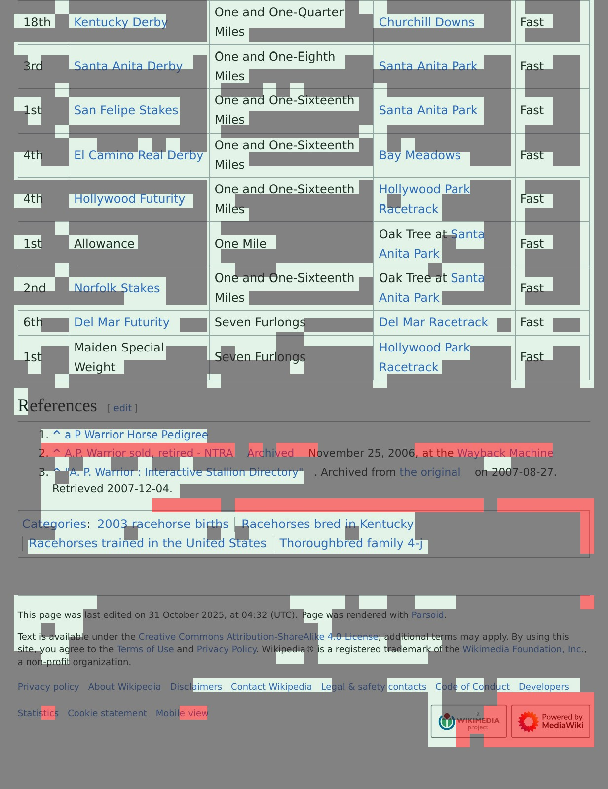
detail-native.png
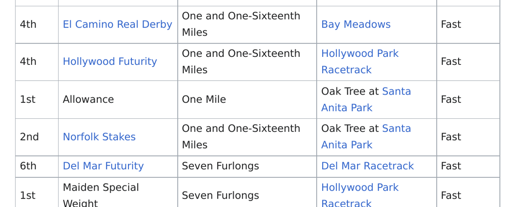
input-1.png
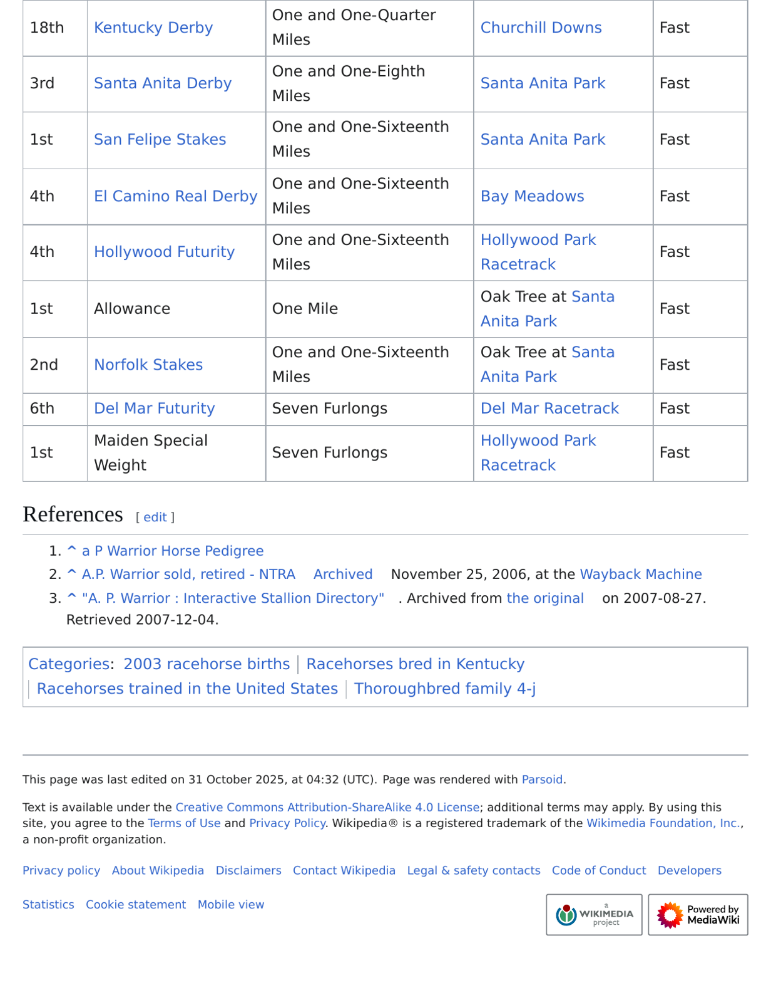
native_docprune-1.jpg
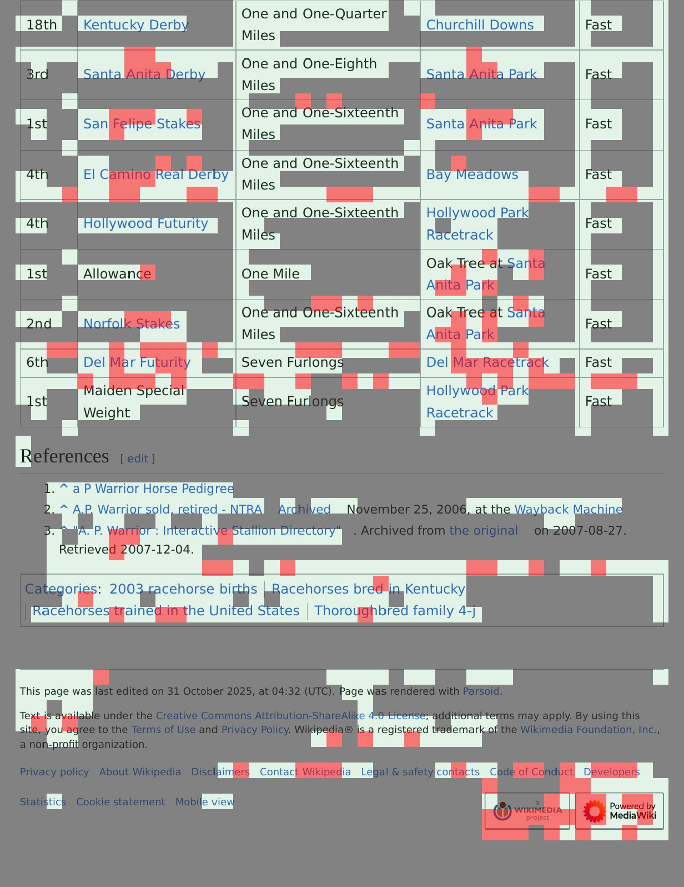
# Q26 Scored tie hides semantic deterioration: original Mustache is visually right; support answer beard is wrong. Input rank0 is a processor-size raster reconstruction. Overlay illustrates token deletion, not an edited image passed to the decoder. Source case record: case.json. Detailed/native crop inspection was after outcome reveal. Raster views are reconstructions, not recovered normalized input tensors.
contextcite_gold_support-0.jpg
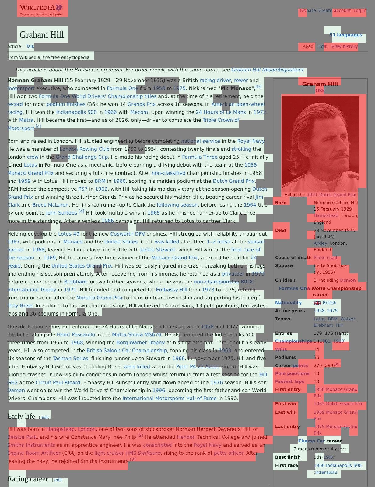
detail-native.png
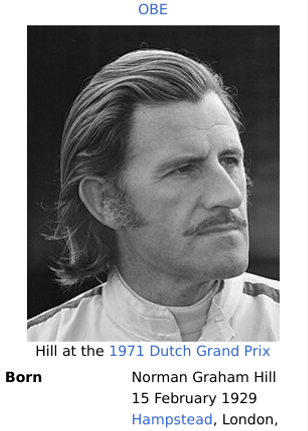
footprint-detail.jpg
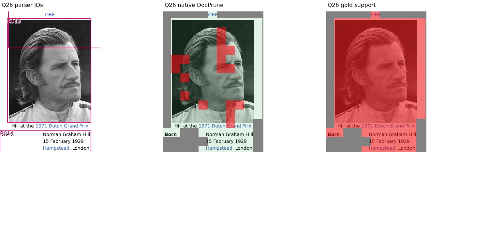
input-0.png
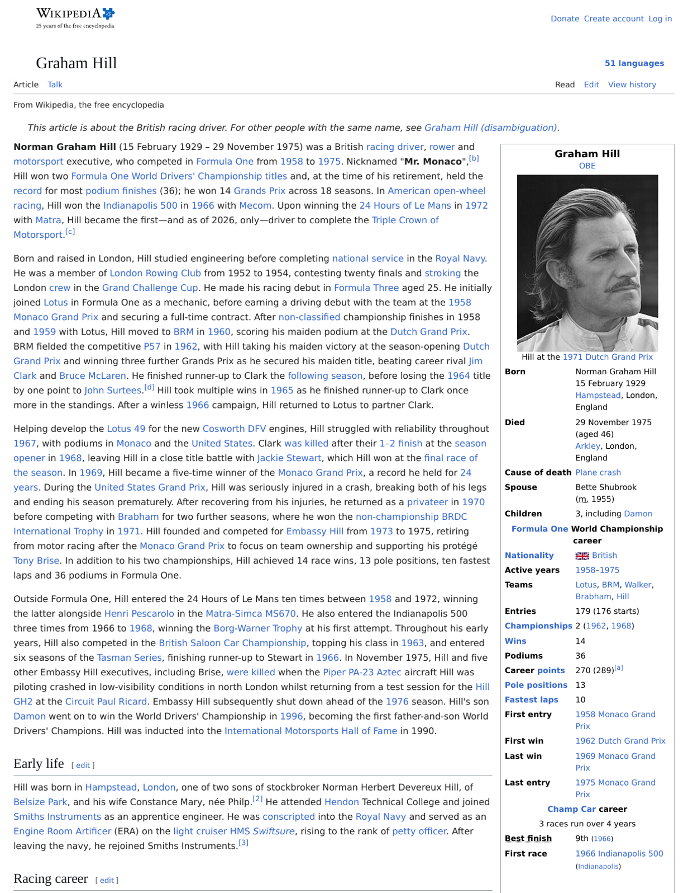
# Q37 Four supplied pages lack the requested Black Hawk Down poster. The separately located gold source page shows a gun, but was NOT an answerer input. Never place it under a label claiming retrieved evidence. Source case record: case.json. Detailed/native crop inspection was after outcome reveal. Raster views are reconstructions, not recovered normalized input tensors.
blind-overview.jpg
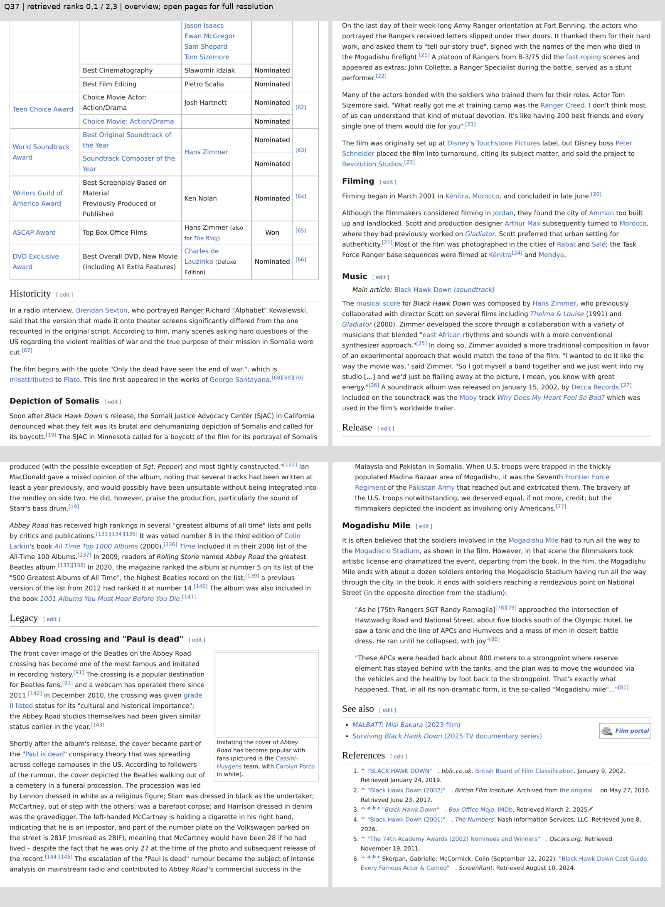
gold-source-page-0.png
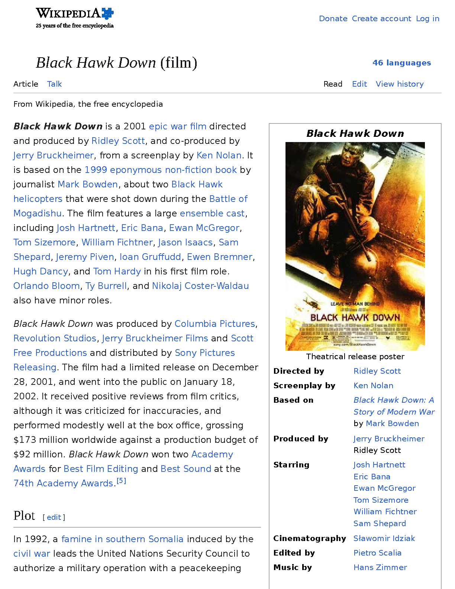
# Q41 Complete-set evaluation defect: unpruned Zhang Ling, Tommy names both 2015 roles; dropping Tommy raises benchmark F1 from 0.4 to 0.5. Do not call it genuine correction. Source case record: case.json. Detailed/native crop inspection was after outcome reveal. Raster views are reconstructions, not recovered normalized input tensors.
detail-native.png
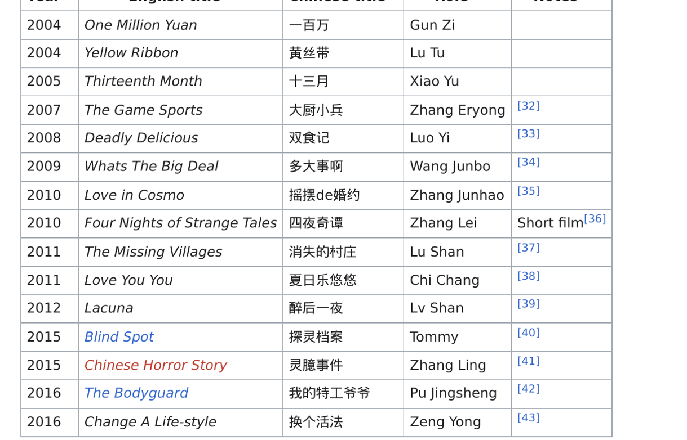
# Q43 Stale gold: the supplied document says 2024 for the latest Dodgers–Yankees World Series, whereas benchmark gold 1981 is outdated. Original historical scores remain unchanged. Source case record: case.json. Detailed/native crop inspection was after outcome reveal. Raster views are reconstructions, not recovered normalized input tensors.
detail-native.png
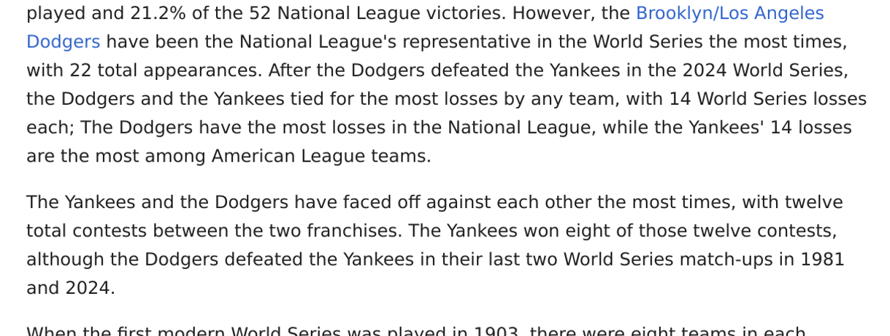